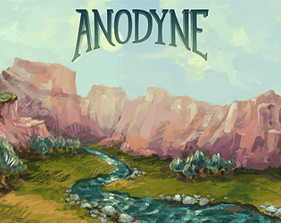

Anodyne
Anodyne
Detalhes
|  | |
| Tempo de jogo | Não Jogado |
| Última Atividade | Nunca |
| Adicionado | 31/03/2025 23:16:05 |
| Modificado | 31/03/2025 23:16:28 |
| Status de Conclusão | Not Played |
| Biblioteca | Itch.io |
| Fonte | itch.io |
| Plataforma | PC (Windows) |
| Data de Lançamento | 04/02/2017 |
| Pontuação da Comunidade | 70 |
| Avaliação da crítica | 70 |
| Pontuação do Usuário | |
| Gênero | Adventure Indie Platform |
| Desenvolvedor | Analgesic Productions Marina Kittaka Melos Han-Tani |
| Editor | Analgesic Productions Nnooo Pty Ltd. |
| Funções | Single Player |
| Links | Official Steam iPhone Android Itch GOG Wikipedia Discord Twitch |
| Tag | [GGDeals] Synced |
Descrição
2023/10 Update: Anodyne has been Remastered! Details: https://steamcommunity.com/app/234900/discussions/0/5943120984243937208/
- The 2D+3D sequel, Anodyne 2, is also available (and on Switch+Xbox+PS)
- Follow updates on our next game, Angeline Era
- If you like this, please follow me on Twitter or subscribe to our newsletter or Youtube
- The music's on Spotify and all other streaming services! (Bandcamp too)
- Our other games are a 2D story platformer, Even the Ocean,and a 3D, cave-exploration platformer, Sephonie.
(Content warnings at bottom)
Explore the wondrous dream world of the human Young.
Anodyne is a unique Zelda-like game, influenced by games such as Yume Nikki and Link's Awakening. In Anodyne, you'll visit areas urban, natural, and bizarre, fighting your way through dungeons and areas in Young's subconscious.
- Join our mailing list for future game updates!
- Join our Discord community!
- Buy the sequel, Anodyne 2: Return to Dust on Steam ! or get it on itch.
- Follow the creators on Twitter, Melos and Marina!
Originally released in 2013 by Marina Kittaka and Melos Han-Tani. Buy the OST at Melos's bandcamp.
-Anodyne features Simplified Chinese, Japanese, Korean, Brazilian-Portugese, Spanish, and Italian language options.
Reception
"Scenic water stretches and skyward spangles decorate idyllic countryside villages and moody, rain-drizzled night scenes. This is another one of those games I've flicked through the screenshots as if it were a global travel book outlining places you should visit before you die." - Chris Priestman, Indie Statik
"The game's sound design is the strongest facilitator of Anodyne's sense of dread and unease; the ambience and music give off an air of suspicion and danger, with ugly chords and disquieting, unnatural-sounding synthetic pings. It all adds up to a game where you're not sure who to trust, and you can't be sure of what's real." - Sam Prell, Penny Arcade Report
Content Warnings (Light spoilers)
- Low-res pixel art (like in the style of the screenshots of): Suicide by hanging, mild horror, murder by blunt objects, dead bodies, stabbing, blood stains, mentions of sex, unexpected killing of an NPC. Rare strong language. Note this isn't representative of the majority of the game, but it is unavoidable.
Content Warnings (Spoilers)
- Early on, if you try to talk to a fisherman, when trying to talk, you will unexpectedly hit them into the ocean and it turns the water red. They're implied to die.
- In the late-game black/white suburb area: suicide by hanging, murder by blunt objects, stabbing, blood stains, dead bodies, mild horror
- In the late-game 8-bit pixel art maze: blood stains, dead bodies
- In the late-game circus area: mentions of suicide, suicide by falling into a pit, dead bodies, blood stains
- In the very-late-game golden garden area: mentions of sex
- Throughout: rare strong language